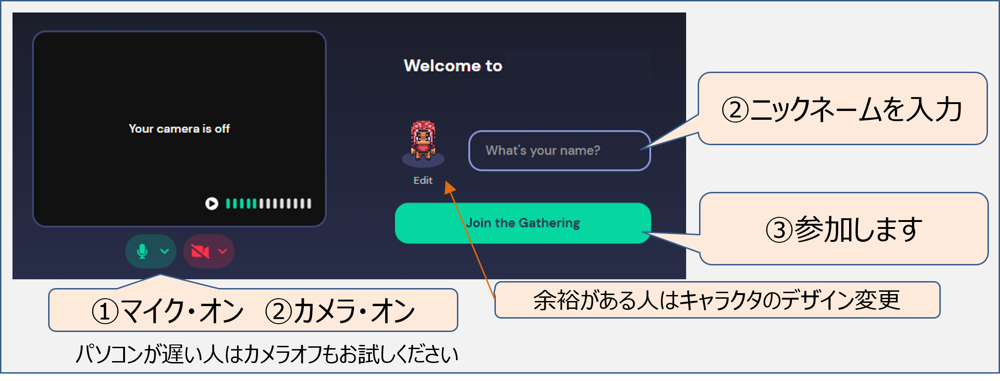
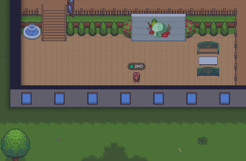
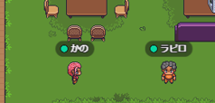

オンラインイベント
CoderDojo青梅がメールで送るオンライン開催の案内に、Gather TownにログインするURLが記載されます。Chromeなどのブラウザでログインします。

Gather Town にログイン成功するとCoderDojo青梅のイベント会場に参加できます。キーボードの矢印キー[←][↑][↓][→]で移動して会場を探索してください。

イベント会場には、CoderDojo青梅のメンターやニンジャがどこかにいるはず。誰かに近づいて挨拶をしよう。本物の会場みたいに、遠くだと声が届かないけれど、誰かに近づくと会話できるよ。開催時刻になったら集合場所をお知らせします。
